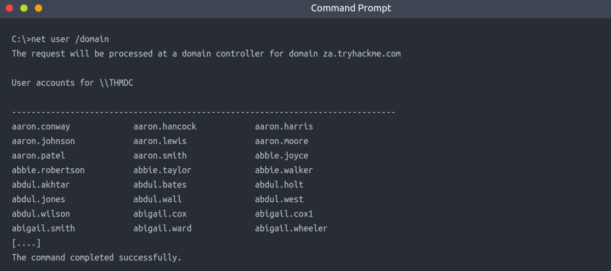
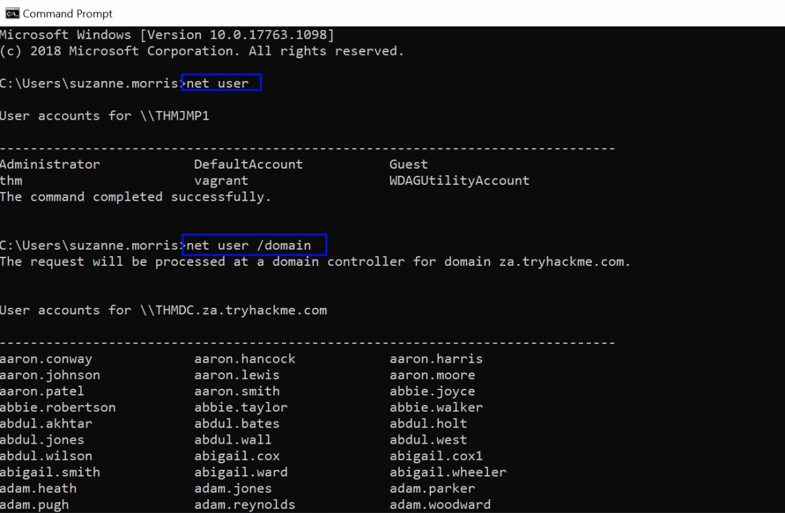
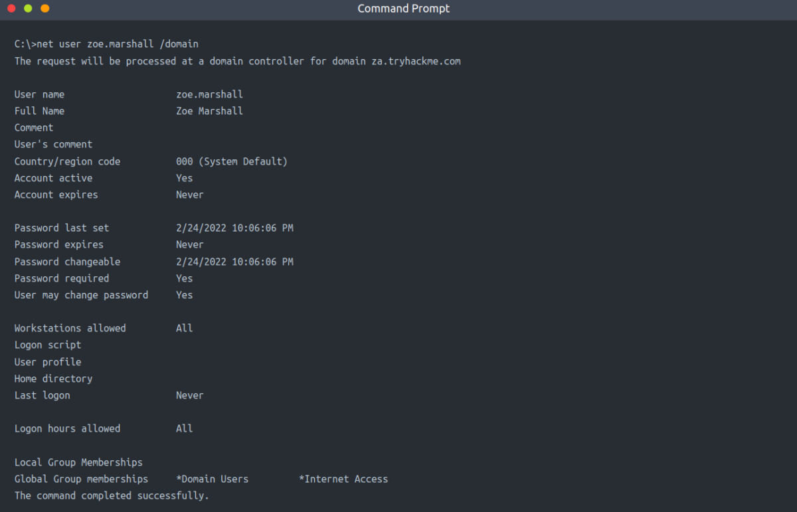
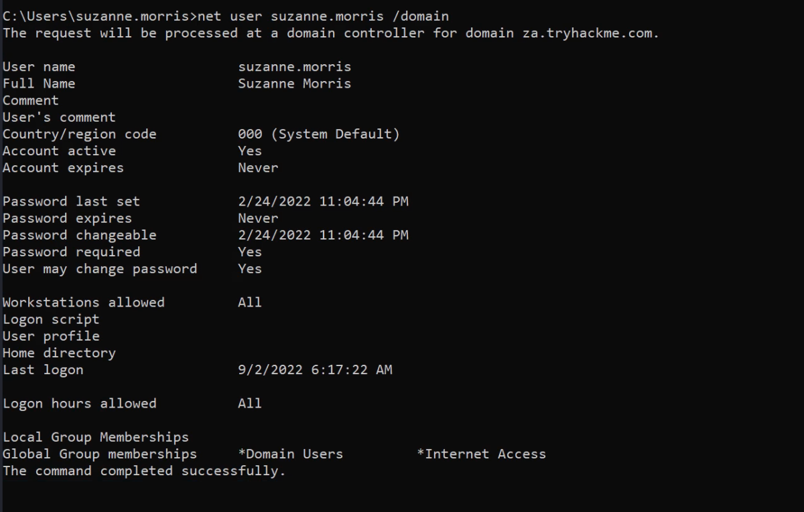
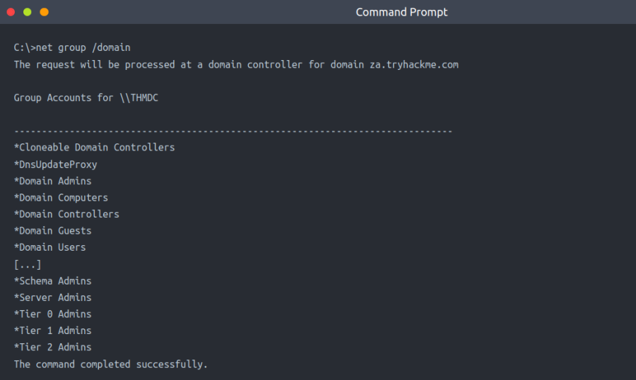
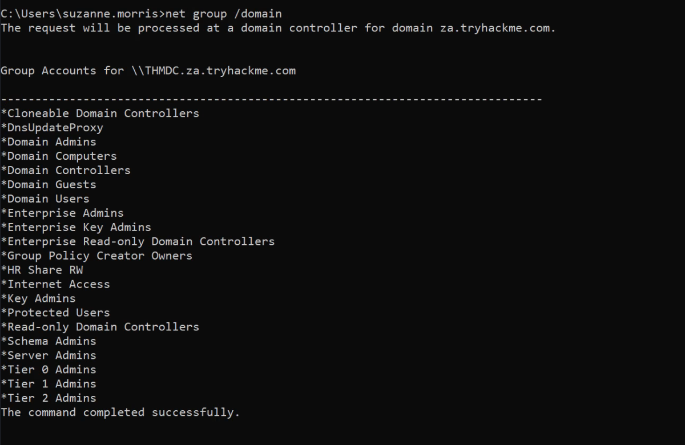
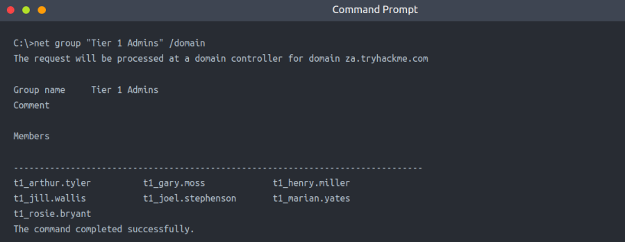
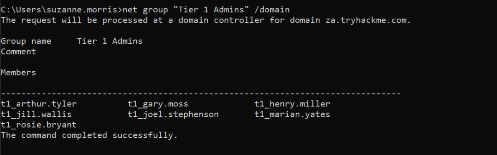
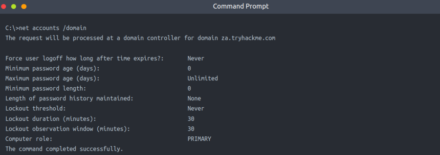
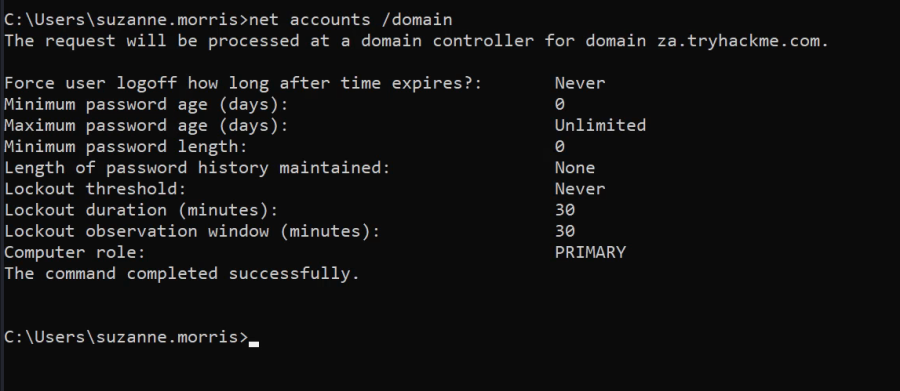

Enumeration Through Command Prompt
There are times when you just need to perform a quick and dirty AD lookup, and Command Prompt has your back. Good ol' reliable CMD is handy when you perhaps don't have RDP access to a system, defenders are monitoring for PowerShell use, and you need to perform your AD Enumeration through a Remote Access Trojan (RAT). It can even be helpful to embed a couple of simple AD enumeration commands in your phishing payload to help you gain the vital information that can help you stage the final attack.
CMD has a built-in command that we can use to enumerate information about AD, namely net. The net command is a handy tool to enumerate information about the local system and AD. We will look at a couple of interesting things we can enumerate from this position, but this is not an exhaustive list.
Note: For this task you will have to use THMJMP1 and won't be able to use your own Windows VM. This will be explained in the drawbacks.
Users
We can use the net command to list all users in the AD domain by using the user sub-option:

Note:
net user : Shows users of the current system
net user /domain : Shows users for the entire domain
In Our Case:

This will return all AD users for us and can be helpful in determining the size of the domain to stage further attacks. We can also use this sub-option to enumerate more detailed information about a single user account:
Example: net user zoe.marshall /domain

Note: If the user is only part of a small number of AD groups, this command will be able to show us group memberships. However, usually, after more than ten group memberships, the command will fail to list them all.
In Our Case:

Groups
We can use the net command to enumerate the groups of the domain by using the group sub-option:
net group /domain

In Our Case:

This information can help us find specific groups to target for goal execution. We could also enumerate more details such as membership to a group by specifying the group in the same command:
net group "Tier 1 Admins" /domain

In Our Case:

Password Policy
We can use the net command to enumerate the password policy of the domain by using the accounts sub-option:
net accounts /domain

This will provide us with helpful information such as:
★ Length of password history kept. Meaning how many unique passwords must the user provide before they can reuse an old password.
★ The lockout threshold for incorrect password attempts and for how long the account will be locked.
★ The minimum length of the password.
★ The maximum age that passwords are allowed to reach indicating if passwords have to be rotated at a regular interval.
This information can benefit us if we want to stage additional password spraying attacks against the other user accounts that we have now enumerated. It can help us better guess what single passwords we should use in the attack and how many attacks can we run before we risk locking accounts. However, it should be noted that if we perform a blind password spraying attack, we may lock out accounts anyway since we did not check to determine how many attempts that specific account had left before being locked.
You can find the full range of options associated with the net command here.
In Our Case:

Benefits
★ No additional or external tooling is required, and these simple commands are often not monitored for by the Blue team.
★ We do not need a GUI to do this enumeration.
★ VBScript and other macro languages that are often used for phishing payloads support these commands natively so they can be used to enumerate initial information regarding the AD domain before more specific payloads are crafted.
Drawbacks
★ The net commands must be executed from a domain-joined machine. If the machine is not domain-joined, it will default to the WORKGROUP domain.
★ The net commands may not show all information. For example, if a user is a member of more than ten groups, not all of these groups will be shown in the output.